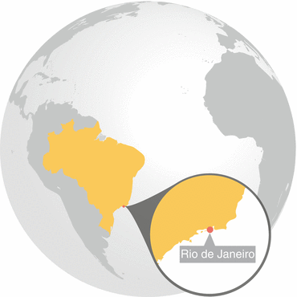
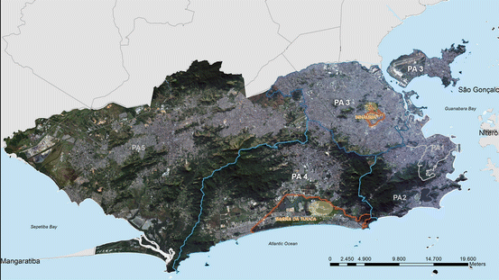
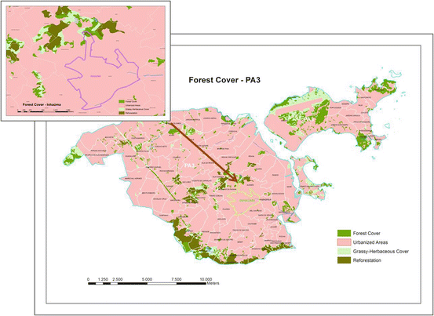
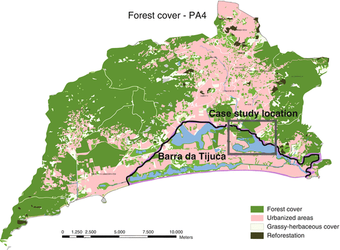
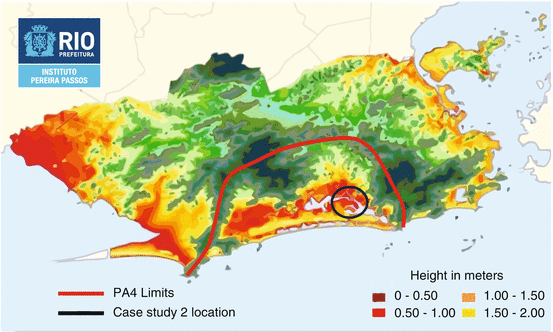
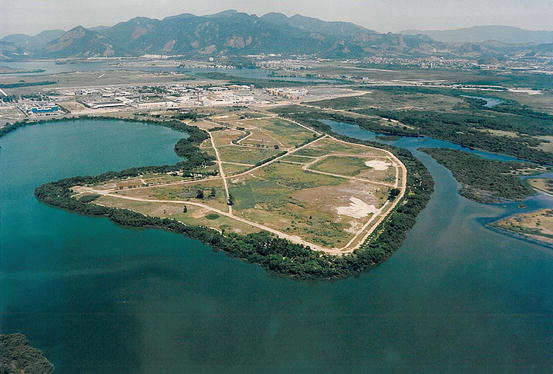
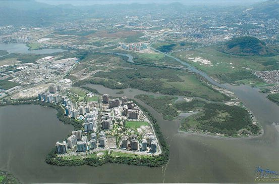

Key Findings
- The city is sprawling
- As an effect the ecosystems are under threat of severe damage and even eradication
- Formal regulations provide protection, but are being changed to support the international sports events and real estate market
- Future challenges for people are to have their voice heard by the decision makers to protect and enhance urban biodiversity and ecosystem services
- Possible solutions/gaps that need addressing are: effective science based long term planning and all stakeholders (scientists, academia, citizens, NGOs) participation, not restricted to the privileged decision makers, entrepreneurs and international sports events organizations
29.1 Introduction
Rio de Janeiro city has an estimated population of 6.3 million inhabitants (Brasil 2011) spread over 1,255.3 km2 (Brasil 2008). Partially forested massifs divide the city into zones, which are officially organized since 1977 in Planning Areas (PAs), of which today there are five. Each PA is composed of several districts, in conformity with their historical, natural, social and economic characteristics. The city’s average population density is 72.87 (SD ± 40.83) people per hectare (PUB-Rio 1977; Rio de Janeiro 2000).
The landscape where the city rests is shaped by lowlands and rocky hills, partly covered of Atlantic Forest vegetational formations (IBGE 2012). These formations encompass a variety of ecosystems like tropical forests, mangrove (Soares et al. 2003), and restinga, a biodiverse ecosystem that covers sandbanks and is composed by herbaceous plants, shrubs, and arboreal species (Rizzini 1979; Araujo 2000; Scarano 2002). This biome is considered one of the world’s 25 biodiversity hotspots (Davis et al. 1986; Myers et al.
2000) and is home to many endangered plant and animal species (Box 29.1). Mountain slopes are characteristically covered by evergreen tropical rainforests with a floristic and faunal composition that varies according to related altitudinal conditions, such as temperature and humidity, and to the geographical position of Rio de Janeiro hills, which influences solar radiation incidence (Cerqueira et al. 1990; Brasil 1992; Oliveira et al. 1995). The city’s ecosystems are fragile and vulnerable to climate change effects, such as sea level rise, warmer climate, stronger and more frequent storms, droughts, floods, and landslides among others (Gusmão 2011).
This chapter will present two case studies that strongly contrast with each other (Fig. 29.1). The first is in the Northern zone (Planning Area – PA 3) where only 4 % of the area is forested, although it is the densest with 117.94 people per hectare.1 The case study is located in the Misericórdia massif in the Inhaúma District, in the midst of the largest favela complex of the city where half of the Rio de Janeiro’s slums city dwellers live and has a community driven bottom-up approach to ecosystem management (Rio de Janeiro 2005).

Fig. 29.1
The two case study areas: The Misericórdia massif in PA3 (Case Study 1) and the Barra da Tijuca district in PA 4 (Case Study 2) (Prepared by and published with kind permission of © Brasiliano Vito Fico/Smac 2012. All Rights Reserved)
The second is of the Southern city area (PA 4) that has more than 40 % of forested land cover. It is located in the coastal Barra da Tijuca district, and is composed of three ecological parks in one of the most recently established sub-divisions of the city. It is an example of a top-down governed ecological restoration and conservation. The two areas have very different ecological, social, cultural and economic characteristics (Table 29.1) but both are examples of good practices of Atlantic Rainforest ecosystems restoration that resulted in now legally protected forested areas.
Table 29.1
Comparison of the districts, Inhaúma and Barra da Tijuca, where the two case study sites are located
INHAÚMA | BARRA | |
|---|---|---|
Area (ha) | 348.5 | 4,799.1 |
Population (inhabitants) | 134,349 | 300,823 |
Urbanized % | 97.9 % | 46.3 % |
Green areas % | 1.6 % | 27.0 % |
Average household income (R$) | 1,300.00 | 9,000.000 |
Box 29.1 Rio de Janeiro’s Threatened Biodiversity
The land area that Rio de Janeiro city covers is one of the areas in Brazil most impacted by colonization and land occupation. The historical development has caused extinction of species, and the contemporary urban expansion continues to pose a threat to many species and native ecosystems. However, a rich biodiversity still remains.
A bibliographic survey was performed for this assessment of the diversity of tree species on the forested hills within the Rio de Janeiro municipality, based on published research on trees with a minimum diameter equal to or higher than 5 cm. Available data was found for Pedra Branca State Park (Peixoto et al. 2004), Tijuca National Forest (Matos 2007), and three different urban forest fragments located in the west zone (Santana et al. 2004). The total sample area of the three studies was 7,000 m2 (0.7 ha), and was found to contain 293 tree species. Among these species, four are exotic: Actinostemon klotzschii (Didr.), Pax (Euphorbiaceae), Mangifera indica L. (mango tree – Anacardiaceae), Artocarpus heterophyllus Lam. (jackfruit – Moraceae), and Pachira glabra Pasq. (Malvaceae). The jackfruit is extremely abundant due to its high recruitment rate (Abreu 2008a, b), and the mango tree is very popular, planted in public and private properties all over the city (personal observations). Twenty species are considered endangered or critically endangered (PCRJ 1997), for example including Caesalpinia echinata Lam. (Fabaceae), Ocotea odorifera (Vell.), Rohwer (Lauraceae), and Rudgea interrupta Benth (Rubiaceae). All are classed by the Brazilian Environmental Ministry as priority for conservation funding projects (Instrução Normativa nº6 2008). Freire et al. (2009) conducted a study of trees with a trunk diameter wider than 15 cm, in a 5,000 m2 (0.5 ha) sample area in the Pedra Branca State Park. In total, 264 tree species were found, which shows on a high species richness amongst the larger trees. This richness, and the support that large trees provide for ecosystems, indicate that the trees are key elements of the local ecosystems.
The most reliable data gathered on other ecosystems and vegetation types (herbaceous, epiphytes, and climbing) within the Rio de Janeiro municipality’s borders, showed that there were 41 critically endangered and 68 endangered species at the time of the study (PCRJ 1997). The findings also showed that within the municipality’s borders, 33 faunal species were rated as critically endangered, and 52 as endangered (PCRJ 1997). Examples of mammal species classified as critically endangered included the tiger cat (Leopardo tigrinus), the ocelot (Leopardo pardalis), and the capybara (Hidrochaeris hidrochaeris). Other critically endangered and endangered species within the municipality’s borders include: many species of birds, e.g., Procnias nudicollis, and rosed spoon bill (Platalea ajaja); fish, e.g., white shark (Carcarhodon carcharias), slender seahorse (Hippocampus reidi); amphibians, e.g., Bokermannohyla circumdata, Cycloramphus fuliginosus; and insects, like the butterfly Parides ascanis, and the dragon-fly Idioneura ancilla, (PCRJ 1997). Some species were already extinct, e.g., medium to large mammals: brown howler monkey (Allouata fusca), muriqui (Bracytheles arachnoides), golden lion tamarim (Leontopithecus rosalia), jaguar (Panthera onca), puma (Panthera onca), and peccaries, such as the collared (Pecari tajacu) and the white-lipped peccari (Tayassu pecari).
29.2 Research Methodology
The assessment builds on a literature review of publications and official documents. Furthermore, semi-structured interviews (Zeisel 2006) were done in order to understand the historical development and legislative framework surrounding the ecosystems and their services. They also served the purpose of creating an understanding for residents’ and volunteers’ perception of the ecosystem service values. The respondents were selected according to their relevance on the historical process and implication on the restoration practices. Common respondents for both case study areas were city officials involved in different departments of mapping, reforestation, Conservation Units and legislation, and the Municipal Environmental Secretary. In the Misericórdia massif case study respondents further included the NGO president, representatives, volunteers, residents and local users of the park. In the Barra da Tijuca the case-specific respondents included the owner-president and advisors of the real estate company, City and State personnel involved in the environmental law enforcement during the licensing process in 1990s, landscape architects involved in the parks planning and design, residents, visitors, and employees. The interviewees of each case study were selected according to their participation in the biodiversity restoration and maintenance process.
29.3 Urbanization, Ecosystem Services and Biodiversity; Scenarios and Trends
During the colonization period (1530–1815), the landscape was inhospitable to human occupation due to the dense rainforest and natural humid areas as wetlands and mangroves, what led to an extensive transformation of the original sites. Since early 1900s, hills were torn down to create land over wetlands and the ocean until the contemporary urban sprawl (Oliveira 2007; Correa et al. 2001; Pinheiro 2010; Rabha 2010). The anthropogenic occupation led to extensive and massive deforestation processes that were induced by many economical cycles and population growth (Dean 2002). Contemporary studies estimate that the remaining Atlantic rain forest biome fragments cover 11.4–16 % of the original area (Ribeiro et al.
2009). In Rio de Janeiro city, from 1984 to 2001, the Atlantic ecosystems’ canopy cover had an area reduction of approximately 28 % (Rio de Janeiro 2002). The original mangroves in the estuarine areas, lagoons and bay margins covered estimated 257.9 km2, approximately 80 km2 remains (Amador 1996).
Severe droughts in the nineteenth century led to a pioneer intensive reforestation of the Tijuca massif mainly with native tree species (some examples of the species used are that of the genus Cariniana and Lecythis (Lecythidaceae), Tibouchina (Melastomataceae), Handroanthus (Bignoniaceae), many Fabaceae (legumes) species of the genus Copaifera, Platymiscium, Swartzia and Caesalpinia). Some exotic trees as mango trees (Mangifera indica L.), jackfruit (Artocarpus heterophyllus Lam.) and species of Eucalyptus were also introduced (Drummond 1997). The objectives of the reforestation were to restore ecosystems services, like water sources, regulate local climate, enable botanic research, and provide recreation. After 150 years, an extensive area of the massif is today forested, protected by a National Park, and is part of the Atlantic Rainforest Biosphere Reserve, a United Nations initiative (Correa et al. 2001; Coelho Netto 2005; Vieira et al.
2010).
The city of Rio de Janeiro was the national capital until April 1960, when it was transferred to Brasilia. The next city’s administrations planned and started to expand the urbanized areas focused on the development of new centralities based on private transportation, without proper infrastructure and social housing. The vision of a future mega city led to the opening of a highway system in 1971 to connect 160 km2 located between the Pedra Branca massif and the ocean in the Jacarepaguá watershed (Rabha 2010). In the decades following that, the favelas (slums) rapidly spread over vulnerable steep slopes and soggy lowlands in clusters along the coast or in distant areas with scarce infrastructure, especially sanitation, and green spaces (Abreu 2008a, b). The formal real estate market occupied the most valuable areas, known as the formal city, which created a rapid vertical spread of the city along the coast with a radical landscape transformation, inspired by the American dream of urban Eldorado, having Miami as architectural and urbanistic model (Rabha 2010).
29.4 Case 1: The Misericórdia Massif
29.4.1 The Role of Ecosystem and Biodiversity, and Effects of Urbanization
The largest massif at the PA3 is named Misericórdia. It is partially covered by one of the last forest remnants of the entire Northern Region of Rio de Janeiro (Fig. 29.2). The region has one of the highest population densities of the city with 37 % of the population distributed over 69 slums (Rio de Janeiro 2002).

Fig. 29.2
One of the last forest remnants of the entire Northern Region of Rio de Janeiro partially covers the Misericórdia massif, located in the Inhaúma district in PA3. The area has one of the highest population densities of Rio de Janeiro City. The reforested hills of Verdejar are at the northern border of Inhaúma (Modified from SMAC, and published with kind permission of © Brasiliano Vito Fico/SMAC 2012. All Rights Reserved)
The massif was originally a farm that was parceled in the twentieth century, and later it was invaded by homeless migrant workers attracted by the local industrial development. In the last decades it became one of the most violent places of the city, with drug dealers ruling a parallel power over the entire informal settlement (Ventura 1995). In end of 2010 the State Police of Rio de Janeiro took over the region, and now the area is mostly under official control.
Granite quarrying results in severe environmental impacts such as elimination of the vegetation cover and the average particulate material on air (a measure of air pollution) in the vicinity has almost double to the acceptable for human health (90–50 m/m3). In some places on PA3 it can reach 145 m/m3, when the limit should be 80 m/m3 (Prefeitura-RJ 2001). Dense and widespread self-constructed favela houses have sealed the soil and substantially altered the landscape structure, together with its processes and flows. Rivers and creeks have been channelized or buried underground, with severe consequences such as floods and landslides.
To face the challenges of the biodiversity eradication, in late 1980s Verdejar NGO started to implement several reforestation and educational practices with the local community located in the Inhaúma district. The NGO was established by a personal effort of Luiz Carlos Marins, known as “Poet”, who lived nearby the district and used the grass covered slopes to practice sports. He began to plant tree seedlings and remove garbage thrown by area dwellers. Gradually, local people started to join him in his actions and become aware of the environmental issues. The main problems were illegal housing occupation in the grassy steep slopes and rock quarry for the construction industry, of which the latter still remains.
The Verdejar members and volunteers have been actively involved in the area conservation and restoration in different fronts. Firstly, they have directly confronted invaders and thus avoided new settlements in the hills. Subsequently, they have worked on ecological restoration, food production and agroforest implementation. In order to motivate local people, they have promoted educational, cultural and artistic actions to clean the trails and planted the new tree seedlings of common native Atlantic rainforest species (e.g., Schinus terebinthifolius Raddi (aroeira), Bixa orellana L. (urucum), Handroanthus chrysotrichus (Mart. ex DC.) Mattos (ipê), Cybistax antisyphilitica (Mart.) Mart., Cordia superba Cham., Piptadenia gonoacantha (Mart.) J. F. Macbr., Schizolobium parahyba (Vell.) S.F. Blake, Trema micrantha (L.) Blume) and native fruit species (for example Psidium guajava L (guava), Genipa infundibuliformis Zappi & Semir (genipapo), Spondias dulcis Parkinson (mango cajá), Theobroma cacao L (cocoa) and. Ziziphus joazeiro Mart. (juazeiro)) and have been managing the forest constantly.
29.4.2 Urbanization Trends and Expected Future Development
Nowadays, the area is largely reforested. Verdejar is directly responsible for the planting of 7,731 m2, and their educational and protective actions allowed 54,263 m2 to naturally regenerate, with care of local residents. They have also mobilized stakeholders through public demonstrations and local assemblies against the impacts of rock mining on health related problems and environmental degradation. By their actions they also stimulate the implementation of a public program of reforestation in the higher elevations of this region.2
Currently, Verdejar NGO is involved in official projects, as well as in ecological and social networks that help their improvement with technical and financial support. Although the local infrastructure is simple, Verdejar has managed to restore an extensive, environmentally degraded area where their head-office is located, with educational and recreation spaces, an ecological dry bathroom, and lately they are working on a native and edible vegetables nursery and garden. Future objectives include: improve the reforestation of grassy slopes, with more local mobilization and incentive to multiple use and care for the area.
29.5 Case 2: Barra da Tijuca: Peninsula, Gleba F and Mello Barreto Parks
29.5.1 The Role of Ecosystem and Biodiversity, and Effects of Urbanization
The Barra da Tijuca district landscape (Fig. 29.3), located in the PA4, was completely transformed after the construction of a network of highways and roads. Two main highways were first built in the early 1970s: East–west Avenida das Américas and North–south Avenida Ayton Senna. They divide the watershed into four areas, which is intended to facilitate the urban expansion. More roads have been added to the circulatory system over humid areas and are promoting further real estate speculation over rich biodiversity and fragile humid territory. As a result, in the last three decades, extensive areas of native ecosystems were almost completely transformed or suppressed to give place to high and medium income residential and commercial complexes as well as shopping malls (Pinheiro and Pinheiro 2001). The globalization trend of open public and private spaces led to manicured gardens (Ignatieva 2010) based on water-demanding green grass lawns, a few exotic ornamental species and palm trees, creating biotic homogenization or a decrease of biodiversity (Müller and Werner 2010). In approximately 7 years (1984–2001), the Barra da Tijuca district lost about 13 % of its natural areas, restinga being the most affected, accounting for 41 % of the lost natural areas; followed by forest (19 %) and mangrove (6 %).3

Fig. 29.3
PA4 with the Barra da Tijuca borders and the Case Study 2 location (Modified from SMAC. © Brasiliano Vito Fico/SMAC 2012. All Rights Reserved)
The Jacarepaguá watershed, which comprises the PA4, is one of the most vulnerable areas to climate change impacts, especially sea level rise, floods and landslides (Fig. 29.4). The area comprehends most of the largest fragments of native and restored mangrove and restinga biodiversity of indigenous Atlantic forest ecosystems in the region, among other local Municipal and State Conservation Units.4 The study area encompasses ecosystems that are largely fragmented but retains some degree of connection to each other, consisting of about 460,000 m2 of protected forests, along 6.5 km of coastal lagoons, in three public ecological parks in a highly urbanized area. Although the parks are public, two of them, Peninsula and Gleba F. Mello Barreto Environmental Educational Park, are inside private owned areas.

Fig. 29.4
Barra da Tijuca vulnerability city map: land up to 2 m above sea level are considered subject to sea level rise. The PA4 is marked in red, and the case study location is marked in dark blue (Modified from Gusmão et al. 2008, p. 93 and published with kind permission of © Rio Prefeitura, Instituto Pereira Passos 2008. All Rights Reserved)
The first development area, Peninsula, was previously a lagoon sediment dredge disposal site with a mangrove fringe that had degraded following human interventions (Figs. 29.5 and 29.6). The entrepreneur envisioned that restoring and conserving the ecosystems in a planned and designed park with native vegetation would give additional sales value to his properties at the Peninsula estate.

Fig. 29.5
Aerial front view of the Peninsula complex in 1997, before it was developed. To the left, the lagoon margin is Mello Barreto Park. To the right is the Gleba F (Photo taken by and published with kind permission of © Carvalho Hosken S.A 1997. All Rights Reserved)

Fig. 29.6
Aerial view of the Peninsula and Gleba F in 2012, after development and establishment of the three parks: two along the lagoon in the left side, and the large green area on the right side. (Photo taken by and published with kind permission of © Carvalho Hosken S.A. 2012. All Rights Reserved)
In 1986 one of the most renowned Brazilian landscape architects, Fernando Chacel, was hired to design a 77,000 m2, 3 km long lagoon-fronting ecological park. The project was developed by an interdisciplinary team to recover through an “ecogenetic” process (Chacel 2001), an aesthetically designed restoration of the mangrove and restinga vegetation, connected by walking trails with diverse facilities to support extensive public use (Jacobs 2007). The park was planned and designed with the support of an interdisciplinary team, headed by Prof. Mello Barreto, a renowned botanist; Sidney Linhares, a landscape architect; and Mario Moscatelli, who led the mangrove restoration. The project aimed to be multifunctional and promote abiotic, biotic and cultural ecosystem services, by providing native biodiversity habitat and connectivity, and enhancing lagoon water quality through mangrove planting, which together also contributed to prevent erosion and sedimentation. The project further aimed to provide support for human activities and included the construction of playgrounds, trails, picnic places and rest areas (Chacel 2001).
Construction of the second park, Mello Barreto, began in the 1990s. The municipality allied with the residents association (ACIBARRA) and succeeded in recovering an illegally occupied and highly degraded strip of land, along the lagoon in the southern area. The same professionals that were responsible for the Peninsula park planning and design were in charge of the ecological restoration and transformed the area into an environmental educational public park. The Mello Barreto park was a much more complex project since the area first had to be cleared from houses and their supporting land filling. The parks were designed to combine social and ecological functions: restore mangrove and restinga ecosystems, as well as promote human uses (Chacel 2001).
The Gleba F is located on the northern side of Peninsula. It includes a 207,061.26 m2 ecological park area covered by virtually pristine mangrove and restinga forests, which hosts a rich native biodiversity but has only to a very limited extent been focus for research (Soares 1998). The ecological park is still closed to the public, but the developer’s idea is to start planning and designing it in a way that can preserve the high biodiversity that live in the area, and open the park to the public in a careful manner, not to degrade the environment with respect for the native faunal and floral species. The developer foresees that the park will add value to his properties and that it will also play a role in environmental education by providing people with direct contact with nature, inside a highly urbanized region.5
More than 11,000 people6 live in the Peninsula complex. The interviewed visitors and residents7 stated that the parks provided them with physical, mental and psychological well-being, direct contact with nature (flora and fauna), pleasant temperature and ambience, clean air, lagoon view, recreation and exercise inside a natural environmental and fruit collection straight from the trees, primarily anthropocentric benefits.
Although the PA4 holds great social and ecological values, as shown in this study, challenges are mounting. The PA4 is under heavy pressure from urban expansion, mainly because of upcoming major sports events that have boosted financial investments in the watershed area, including new highways, and sites for the 2016 Olympic Games. The region at large sees a significant number of new real estate developments. However, as shown by the respondents in this study, the parks are vital nodes for the local biodiversity, and hold a strong social-ecological importance for the area. The “ecogenetic” design that mimics native ecosystems is an important instrument to keep raising social awareness of the aesthetic potential of indigenous biodiversity in green areas (Nassauer 1997), and potentially support ecosystem stewardship in the future.
29.6 Governance and Formal Institutions
29.6.1 Case 1: The Misericórdia Massif and the Non-governmental Organization VERDEJAR
The socially oriented movements for the Misericórdia Massif preservation started in 1985, and were intensified in the 1990s decade. Local people missed the ecosystem services that were eliminated during the occupation process and decided to protect and restore the reduced remaining open spaces. The locals organized seedling planting actions, ecological hiking, meetings with local communities, and started to draw attention to the region’s social and ecological problems. Two NGOs and their representatives were important in this process: Bicuda Ecológica and Verdejar. In 1995, both of them succeeded in bringing an official reforestation program called Mutirão Reflorestamento (meaning Reforestation Common Effort) to initiate the reforestation efforts in a number of hilltop locations. This currently ongoing municipal program temporarily employs local people to plant seedlings with technical assistance by the municipality.
The organizations promoted regular environmental educational lectures in 1998, and in 2000 they organized a seminar about the Misericórdia massif’s main problems to discuss garbage recycling, water usage, population growth and environmental degradation, among others.8 The event brought together several different groups of stakeholders, such as academic researchers, local associations’ delegates, politicians as well as city technical and judiciary representatives. As a result of the intense mobilization a Municipal Conservation Unit (CU) named Misericórdia APARU9 (meaning Environmental and Urban Recovery Area) was created by the city administration in 2000. However, in spite of its legal framework, the practical development of the CU, such as creating a management council; establishing an administrative venue; hire proper staff to work in the protected area; and develop conservation and educational programs, never happened.
29.6.2 Case 2: Barra da Tijuca: Peninsula, Gleba F and Mello Barreto Parks
The three parks at Barra da Tijuca were created in accordance with the municipality’s environmental legislation requirements, to restore and conserve legally protected riparian corridors, and the well-preserved native forested fragment located at Gleba F. The State and City departments, and the real estate entrepreneur, were involved in an intensive litigation from 1980 until the new development project was approved in 2000.10 The litigation ensured that the real estate company complied with existing laws, and adapted the planned development to the occupation density and soil permeability, before the final development licenses were received for the Peninsula and Gleba F residential-commercial subdivisions.11
Box 29.2 Rio de Janeiro’s Land Cover Changes: Past, Present, and Future Trends
From 1960 and throughout the second half of the twentieth century, the establishment of Conservation Units (CUs) was the main tool to promote biodiversity protection. This was followed in 1986 by the implementation of a successful city reforestation program, Mutirão Reflorestamento (Reforestation Common Effort). As a result of the implementation of CUs, protected areas grew remarkably, from 97 ha in 1960 to 18,685 ha in 1974. The advance was mainly a result of the establishment of the largest CUs: Tijuca National Park, established in 1961 and covering 3,360 ha; Pedra Branca State Park, established in 1974 and covering 12,500 ha; and Guaratiba Archaeological and Biological Reserve, established in 1974 and covering 2,800 ha.
However, a significant drop in the increase of protected areas occurred from 1990 to 1995, when they increased from 19,951 to 23,387 ha, thus only adding 3,436 ha over a 5 year period (Rio de Janeiro 1998). The pace of CUs protection from 1999 to 2006 was even slower, going from 23,387 to 23,581 ha, only 194 ha in total. On the other hand, Mutirão Reflorestamento was initiated in 1986, and had resulted in 1,920 ha of reforested slopes by 2010, mainly in landslide susceptible areas. If this trend continues we can estimate that in 2050, CUs will cover 29,647 ha, which would be an increase of 6,065.85 ha compared to 2006. The increase in other types of reforested areas following the Mutirão Reflorestamento afforestation program has followed a linear trend, going up from 1,120 ha in 2000 to 1,920 ha in 2010. If this trend continues, in 2050, 4,777.20 ha will be covered by replanted forests, an increase of 2,857.20 ha compared to 2010.
However, the two policies have not been sufficient to control or compensate for the degradation of native ecosystems. The decrease of natural areas and the increase of urban sprawl can be estimated based on data from 1984, 2001 and 2010. From 1984 to 2001, the area covered by natural landscapes decreased from 43,384.48 to 36,567 ha; a decrease rate of 401.28 ha/year. In the same period the total urban area increased from 33,749.94 to 42,023 ha; an expansion rate of 486.65 ha/year. From 2001 to 2010 the forested land cover shrunk to 2,8536.3 ha; a decrease rate of 892.30 ha/year, and urbanized areas grew to 53,114.60 ha; an increase rate of 1,232.40 ha/year.
Methodology: The projections of past and future land cover change are based on the data published by Rio de Janeiro Municipality (2000). The future projections of CUs and tree canopy covered land in 2050 were made using data tables, and with available GIS data. It is possible that differences in methodology from the data extracted from GIS estimates do not lead to precise figures; however, it is important to note the tendencies that these estimates represent. Regarding CU’s and Mutirão Reflorestamento, the figures were more dependable for projections for 2050. The projections for 2050 in CUs’ total area are based on 1999–2010. The time period data selection was made to correspond to that of Mutirão Reflorestamento, which started in 1986 and have reliable data from 2000. Existing land cover change data is quantitative inadequate to make reliable trend illustrations and predictions, and only simple values could be estimated. This was done by calculating the difference between natural and urban land cover, comparing different years and dividing the differences by the number of years, assuming that these had a constant rate.
29.7 Concluding Remarks
Almost all of Rio de Janeiro’s landscape has been transformed and degraded by anthropogenic activities, which still today threaten the remnant forested areas (Drummond 1997; Soares 1998). The restoration and management of the urban area’s ecosystems is thus imperative but needs to consider social, institutional and governance aspects for its long-term sustainability (ITTO 2002).
The 2011 Director Plan12 favorably regulated the protection and restoration of urban biodiversity. During the last years, additional governmental programs have been implemented to restore, increase and monitor biodiversity in the city, especially Mutirão Reflorestamento (Reforestation Common Effort), Conservation Units implementation, Hortas Cariocas (Vegetable Gardens in municipal schools) and Sigfloresta (GISForests, mapping and monitoring urban native forest fragments). Therefore, there were improvements in the urban-forested coverage (Box 29.2).
However, the growing city continues to spread over sensitive areas that suppress natural ecosystems, to give place to roads, rivers channelization and extensive impervious surfaces, which leads to a decrease in natural areas and an increase in urbanized areas.
In spite of the protective legislation, the deforestation continues, mainly in PA4 and PA5, where most of the city’s native ecosystem fragments are located. The new infrastructure, oriented to support the international sports events (World Soccer Cup in 2014 and the Olympic Games in 2016), leads to further urban expansion. One of the major impacts on urban biodiversity is the legislation alteration – Projeto de Lei Complementar nº 125/2013–from late 2012, which aims to realize the construction of the Olympic golf course in a high priority conservation zone. The legislation alteration fails to demand a proper ecosystem impact assessment and has been accepted without inclusion of the public in the decision-making. On the other hand, a new suggested municipal urban Green Corridors program, if approved by the decision makers, may mitigate some of the negative impacts of the urban development, as the program is aimed to protect vulnerable areas, and connect remnant forest areas located in the massifs and lower humid lands.13
The two case studies present two vastly different social-ecological contexts, although both provide ecosystem services. In the Misericóridia case, the community played a determinant role to legally and effectively protect and reforest the slopes of the massif. Verdejar members are engaged on advance their own formal education (undergraduate and graduate), in spite of financial difficulties in order to continue to develop their projects while they still continuously engage in volunteer jobs. The members have since the organization’s beginning attracted, educated and raised awareness of the natural area amongst the local community residents. The Verdejar members and their local partners have a deep understanding of the ecosystem services the forest provide locally, regionally and even globally,14 and continue to work to improve the environmental legislation and governance.
In the second case study, the interviewed residents were attracted to live there because of the green areas, although they only had a vague perception of the ecological benefits of the forests. They valued the biodiversity, and were eager to learn more about the local ecosystems. The region offered an array of indoor recreation and entertainment that competed with outdoor life. The residents’ relation with nature was passive, they were not engaged in the planting and management as the Verdejar people were.
The case studies show that several projects and strategies were in play in Rio de Janeiro aimed to increase the urban forests, with stakeholders on several social levels involved. The findings point to that education and effective public participation seems to be the key to sustain and support biodiversity in the city in the long term.
Urban forests are important as they provide a number of important ecosystem services, including improvement of chemical and physical environmental processes, energy conservation, carbon dioxide storage (ITTO 2002), and improvement of air quality and urban hydrology (Dwyer et al. 1992; Stromberg 2001). Climate change is increasing the threats of heat island effects, sea level rise, droughts, floods and landslides among others. These events, already common in the city, are becoming increasingly frequent and intense, and causes heavy economic, social and ecological losses (Coelho Netto 2005; Brandão 2004; Gusmão et al.
2008; Gusmão 2011). Changes in land-use and a decrease in urban forest cover contribute to increase the city’s vulnerability to the challenges posed by climate changes. Therefore, biodiversity conservation should be prioritized in order to increase urban resilience, by contributing to mitigate GHG emissions, and support the capacity of urban ecosystems to adapt to unexpected changes (Novotny et al. 2010; Blanco et al.
2010).
References
Abreu, M. A. (2008a). A Evolução urbana do Rio de Janeiro. Rio de Janeiro: IPP.
Abreu, R. C. R. (2008b). Dinâmica de populações da espécie exótica invasora Artocarpus heterophyllus L. (Moraceae) no Parque Nacional da Tijuca – Rio de Janeiro. Dissertação de mestrado, Mestrado em Botânica, Instituto de Pesquisa Jardim Botânico do Rio de Janeiro.
Amador, E. S. (1996). Baía de Guanabara e ecossistemas periféricos: homem e natureza. PhD thesis, Instituto de Geociências, Universidade Federal do Rio de Janeiro, p. 539.
Araujo, D. S. D. (2000). Análise florística e fitogeográfica das restingas do Estado do Rio de Janeiro. PhD thesis, Universidade Federal do Rio de Janeiro, Brazil
Blanco, H., McCarney, P., Parnell, S., Schmidt, M., & Seto, K. C. (2010). The role of urban land in climate change. In C. Rosenzweig, W. D. Solecki, S. A. Hammer, & S. Mehtora (Eds.), Climate change and cities – First assessment report of the urban climate change research network (pp. 217–248). Cambridge: Cambridge University Press.
Brandão, A. M. P. M. (2004). Clima urbano e enchentes na cidade do Rio de Janeiro. In A. J. T. Guerra & S. B. Cunha (Eds.), Impactos Ambientais Urbanos no Brasil (pp. 47–109). Rio de Janeiro: Editora Bertrand Brasil Ltda.
Brasil. (1992). IBGE – Instituto Brasileiro de Geografia e Estatística. Manual técnico da vegetação brasileira. DEDIT/CDDI, 83pp. Rio de Janeiro.
Brasil. (2008). IBGE mostra a nova dinâmica da rede urbana brasileira. IBGE – Instituto Brasileiro de Geografia e Estatística. Available via DIALOG. Rio de Janeiro. http://www.ibge.gov.br/home/presidencia/noticias/noticia_visualiza.php?id_noticia=1246. Accessed 1 Apr 2011.
Brasil. (2011). Population estimates. IBGE – Instituto Brasileiro de Geografia e Estatística. Available via DIALOG. Rio de Janeiro. http://www.ibge.gov.br/english/presidencia/noticias/noticia_visualiza.php?id_noticia=1961&id_pagina=1. Accessed 15 Mar 2011
Cerqueira, R., Fernandez, F. A. S., & Quintela, M. F. S. (1990). Mamíferos da restinga de Barra de Maricá, Rio de Janeiro. Papéis Avulsos de Zoologia (São Paulo), 47, 141–157.
Chacel, F. M. (2001). Paisagismo e ecogênese [Landscaping and ecogenesis]. Rio de Janeiro: Editora Fraiha.
Coelho Netto, A. L. (2005). A interface florestal-urbana e os desastres naturais relacionados à água no maciço da tijuca: desafios ao planejamento urbano numa perspectiva sócio-ambiental. Revista do Departamento de Geografia, 16, 46–60.
Correa, M. S., Martinelli, G., & Menezes, P. C. (2001). Parque Nacional da Tijuca – 140 anos da reconstrução de uma floresta. Rio de Janeiro: Editora Oura sobre Azul.
Davis, S. D., Droop, S. J. M., Gregerson, P., Henson, L., Leon, C. J., Villa-Lobos, J. L., Synge, H., & Zantovska, J. (1986). Plants in danger: What do we know? Cambridge: IUCN.
Dean, W. (2002). A Ferro e Fogo – A história e a devastação da Mata Atlântica Brasileira (2nd ed.). São Paulo: Companhia das Letras.
Drummond, J. A. (1997). Devastação e preservação ambiental no Rio de Janeiro: os parques nacionais do estado do Rio de Janeiro. Niterói: EDUFF.
Dwyer, F., McPherson, E. G., Schroeder, H. W., & Rowntree, R. A. (1992). Assessing the benefits and costs of urban services. Journal of Arboriculture, 18(5), 227–234.
Freire, J. M., Oliveira. R. R., Rosendo, E., & Braga, J. M. A. (2009). I Encontro Científico Parque Estadual da Pedra Branca: Ciência para a gestão ou gestão para a Ciência? 23 a 28 de Outubro. Avaiable via DIALOG. http://urutau.proderj.rj.gov.br/inea_imagens/downloads/1_Encontro_Cientifico_PEPB.pdf
Gusmão, P. P. (Ed.). (2011). Megacidades, vulnerabilidades e mudanças climáticas: Região Metropolitana do Rio de Janeiro. Rio de Janeiro: UFRJ/UERJ/FIOCRUZ/PCRJ.
Gusmão, P. P., Carmo, P. S., & Besserman, S. (Eds.). (2008). Rio: próximos 100 Anos – O aquecimento global e a cidade. Rio de Janeiro: IPP – Instituto Pereira Passos.
IBGE. (2012). Manual Técnico da Vegetação Brasileira. 2ª edição, Eds. Instituto Brasileiro de Geografia e Estatística. Rio de Janeiro: IBGE, Centro.
Ignatieva, M. (2010). Design and future of urban biodiversity. In N. Müller, P. Werner, & J. G. Kelcey (Eds.), Urban biodiversity and design (pp. 118–144). Chichester: Wiley-Blackwell.CrossRef
ITTO. (2002). ITTO guidelines for the restoration, management and rehabilitation of degraded and secondary tropical forests (ITTO policy development series, Vol. 13). Yokohama: International Tropical Timber Organization.
Jacobs, P. (2007). Echoes of paradise: Fernando Chacel’s gardens in the coastal plain of Jacarepaguá. In M. Conan (Ed.), Contemporary garden aesthetics, creations and interpretations. Washington, DC: Dumbarton Oaks and Trustees of Harvard University.
Matos, J. J. B. S. (2007). Composição florística de espécies arbóreo-arbustivas em trecho de borda situado no Parque Nacional da Tijuca, Rio de Janeiro, Brasil. Dissertação de Mestrado (pp.70). Seropédica: Departamento de Engenharia Florestal, UFRRJ.
Müller, N., & Werner, P. (2010). Urban biodiversity and the case for implementing the convention on biodiversity in towns and cities. In N. Müller, P. Werner, & J. G. Kelcey (Eds.), Urban biodiversity and design (pp. 3–33). Chichester: Wiley-Blackwell.CrossRef
Nassauer, J. I. (1997). Cultural sustainability: Aligning aesthetics and ecology. In J. I. Nassauer (Ed.), Placing nature – Culture and landscape ecology (pp. 65–83). Washington, DC: Island Press.
Novotny, V., Ahern, J., & Brown, P. (2010). Water centric sustainable communities – Planning, retrofitting, and building the next urban environment. Hoboken: Wiley.CrossRef
Oliveira, R. R. (2007). Mata Atlântica, paleoterritórios e história ambiental. Ambiente & Sociedade, X(2), 11–23.CrossRef
Oliveira, R. R., Zaú, A. S., Lima, D. F., Silva, M. B. R., Vianna, M. C., Sodré, D. O., & Sampaio, P. D. (1995). Significado ecológico da orientação de encostas no Maciço da Tijuca, Rio de Janeiro. Oecologia Brasiliensis, VI, 523–541.CrossRef
PCRJ, Secretaria Municipal de Meio Ambiente (SMAC) da Cidade do Rio de Janeiro. (1997). Lista Oficial das Espécies da Flora e Fauna Ameaçadas de Extinção na Cidade do Rio de Janeiro. Decreto Municipal 15.793 de 4 de junho de 1997.
Peixoto, G. L., Martins, S. V., Silva, A. F., & Elias, S. (2004). Composição florística do componente arbóreo de um trecho de Floresta Atlântica na Área de Proteção Ambiental da Serra da Capoeira Grande, Rio de Janeiro, RJ, Brasil. Acta botanica Brasílica, 18(1), 151–160.
Pinheiro, A. I. F. (2010). A cidade e o tempo. In A. I. F. Pinheiro (Ed.), Rio de Janeiro: cinco séculos de história e transformações urbanas (pp. 21–41). Rio de Janeiro: Casa da palavra.
Pinheiro, A. I. F., & Pinheiro, E. C. (2001). A construção do lugar: Barra da Tijuca. Rio de Janeiro: Editora Sextante.
Prefeitura da Cidade do Rio de Janeiro. (2001). Indicadores de Qualidade Ambiental da Cidade do Rio de Janeiro – Verão de 2001. Julho de 2001 Armázem de dados – IPP. www.armazemdedados.rio.rj.gov.br
PUB RIO. (1977). Plano urbanístico básico da cidade do Rio de Janeiro. Rio de Janeiro: Secretaria Municipal de Planejamento e Coordenação Geral, Prefeitura da Cidade do Rio de Janeiro.
Rabha, N. M. C. E. (2010). Rio, uma cidade e seus planos. In A. I. F. Pinheiro (Ed.), Rio de Janeiro – cinco séculos de história e transformações urbanas (pp. 205–229). Rio de Janeiro: Casa da Palavra.
Ribeiro, M. C., Metzger, J. P., Martensen, A. C., Ponzoni, F. J., & Hirota, M. M. (2009). The Brazilian Atlantic Forest: how much is left, and how is the remaining forest distributed? Implications for conservation. Biological Conservation, 142, 1141–1153.CrossRef
Rio de Janeiro. (1998). Guia das Unidades de Conservação Ambiental do Rio de Janeiro. IBAM/DUMA, PCRJ/SMAC, Rio de Janeiro.
Rio de Janeiro. (2000). Bairros Cariocas. Armazém de Dados, IPP, Prefeitura Rio de Janeiro. Available via DIALOG. http://portalgeo.rio.rj.gov.br/bairroscariocas/ Accessed 22 Mar 2012.
Rio de Janeiro. (2002). Os dados mais recentes sobre populações de favelas da Cidade do Rio de Janeiro. Coleção Estudos da Cidade, Prefeitura da Cidade do Rio de Janeiro-RJ. Rio de Janeiro: IPP – Armázem de Dados. Available via DIALOG. http://www.armazemdedados.rio.rj.gov.br. Accessed 19 Mar 2012.
Rio de Janeiro. (2005). Plano Diretor Decenal de 1992: subsídios para sua revisão – 2005. Rio de Janeiro: IPP, SMU – Prefeitura da Cidade do Rio de Janeiro. Available via DIALOG. http://portalgeo.rio.rj.gov.br/estudoscariocas/download/2370_Plano%20Diretor%20Decenal%20de%201992%20-%20subsídios%20para%20sua%20revisão%202005.pdf. Accessed 30 Mar 2012.
Rizzini, C. T. (1979). Tratado de fitogeografia do Brasil (Vol. 2). São Paulo: Edusp.
Santana, C. A. A., Lima, C. C. D., & Magalhães, L. M. S. (2004). Estrutura horizontal e composição florística de três fragmentos secundários na cidade do Rio de janeiro. Acta Scientiarum. Biological Sciences, 26(4), 443–451.CrossRef
Soares, M. L. G. (1998). Estrutura vegetal e grau de perturbação dos manguezais da lagoa da Tijuca, Rio de Raneiro, RJ, Brasil. Revista Brasileira Biologia, 59(3), 503–515.CrossRef
Soares, M. L. G., Chaves, F. O., Corrêa, F. M., & Júnior, C. M. G. S. (2003). Diversidade estrutural de bosques de mangue e sua relação com distúrbios de origem antrópica: o caso da Baía de Guanabara (Rio de Janeiro). Anuário do Instituto de Geociências – UFRJ, 26, 101–116.
Stromberg, J. C. (2001). Restoration of riparian vegetation in the south-western United States: importance of flow regimes and fluvial dynamism. Journal of Arid Environments, 49, 17–34.CrossRef
Ventura, Z. (1995). Cidade partida. São Paulo: Companhia das Letras.
Vieira, A. C. P., Issa, B., & Salaverry, R. (2010). Parque Nacional da Tijuca – Uma floresta na metrópole. Rio de Janeiro: Andrea Jakobson Estúdio Editorial Ltda.
Zeisel, J. (2006). Inquiry by design: Environmental/behavior/neuroscience in architecture, interiors, landscape and planning (Rev. ed.). New York: W.W. Norton.
Footnotes
1
Calculations were based on data available at the Rio de Janeiro municipality web sites www.sigfloresta.rio.rj.gov.br/ and http://portalgeo.rio.rj.gov.br/bdario/
8
More information about NGOs’ activities and history http://verdejar.wordpress.com and http://www.bicuda.org.br/rede/bem-vindo-a-nossa-rede/bicuda-ecologica/historico viewed 25.072012. [in Portuguese].
9
Law n° 19144, November 14, 2000. Available at http://www2.rio.rj.gov.br/smu/buscafacil/Arquivos/PDF/D19144M.PDF viewed 29.03.2012 [in Portuguese].
11
Carvalho Hosken S.A. opened all documents related to the history and approval of the real estate incorporation.